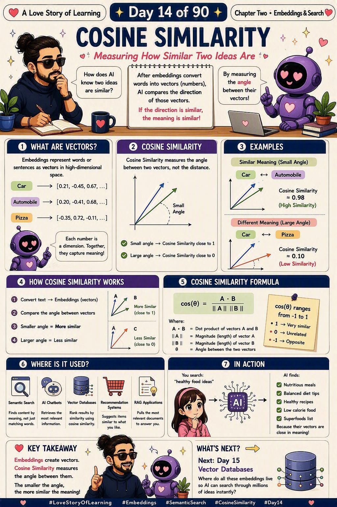

📜 The 30-second brief
In Note 11 we taught AI to turn meaning into numbers (embeddings). But once every word is a vector, one question remains: how do we measure whether two vectors mean the same thing? Cosine Similarity is the answer. It measures the angle between two vectors — not the distance between them.
The rule is beautifully simple: a small angle means similar meaning, a large angle means different meaning. It ignores how long the vectors are and cares only about the direction they point. That single choice is why a one-line note and a long essay on the same topic still score as a near-perfect match. 💕
💌 A fresh analogy: two flashlights in a dark room
Picture you and a friend standing in a dark room, each holding a flashlight. Cosine similarity does not care how far apart you're standing, and it does not care how bright your beam is. It cares about one thing only: are your two beams pointing the same way?
Both of you shine at the same painting → your beams point the same direction → cosine ≈ 1, same meaning. One shines at the painting, the other at the ceiling → a right angle → cosine ≈ 0, unrelated. Point in exactly opposite directions → cosine ≈ -1, opposites. The beam's brightness is the vector's length; the direction is its meaning — and cosine deliberately looks only at direction. 🔦
🔍 What cosine similarity actually measures
| The angle | Cosine value | What it means |
|---|---|---|
| 📐 Small angle (≈ 0°) | ≈ 1 | Same direction → very similar meaning (Car ↔ Automobile). |
| 📐 Right angle (≈ 90°) | ≈ 0 | Unrelated → no meaningful connection (Car ↔ Pizza). |
| 📐 Opposite (≈ 180°) | ≈ -1 | Complete opposites → contradictory meaning. |
Why the angle and not the distance? Because distance gets fooled by size. A short document and a long document on the same topic sit far apart in raw distance — but their vectors point the same way, so cosine correctly calls them a match.
🧮 The formula (gentle version)
cos(θ) = (A · B) / (‖A‖ × ‖B‖)
- A · B — the dot product of the two vectors (how much they overlap).
- ‖A‖ and ‖B‖ — the magnitude (length) of each vector.
- θ — the angle between the two vectors.
Dividing by the lengths is the clever bit — it cancels out size and leaves only pure direction. The result always lands between -1 (opposite) and +1 (identical direction), with 0 meaning unrelated.
🧵 Untangling the four that sound the same
Here's the confusion so many people hit — Embeddings, Vector Databases, Semantic Search and Cosine Similarity all sound like the same thing wearing different clothes. 😅 They're not. Follow one real-life story and they fall neatly into place: you move to a huge new city and want to find people who think like you.
| Concept | Its role in the story | In one line |
|---|---|---|
| 🧭 Embeddings (Note 11) | The city gives every person a "home address" based on their personality. People who think alike live in the same neighbourhood. | Turn meaning into location (numbers). |
| 🗄️ Vector Database (Note 15) | All those millions of addresses are stored in one giant, instantly-searchable directory. | The place where all the locations live. |
| 🔍 Semantic Search (Note 12) | You walk in and say "find me people like me" — by meaning, not by name or spelling. | The mission: find by meaning. |
| 📐 Cosine Similarity (Note 14 · today) | How the city actually decides who is "like you" — by checking which direction each person faces, not how far their house is. | The ruler that scores the match. |
The through-line: Embeddings build the map, the vector database stores it, semantic search is the goal, and cosine similarity is the measuring tool that makes the whole thing possible. Three of them set the stage — cosine is the quiet ruler that actually calls the match. 💗
💡 Why it matters (and where it shows up)
- Semantic search. Finds content by meaning, so "healthy food ideas" returns nutritious meals and superfoods — even without those exact words.
- RAG applications. Retrieves the most relevant documents to feed an LLM, ranking them by cosine score.
- Recommendation systems. "You might also like…" is often just cosine similarity between item vectors.
- Chatbots & FAQ matching. Maps your messy question to the closest known answer by direction of meaning.
- Deduplication & clustering. Groups near-identical ideas together even when the wording differs.
🏭 Real-world example: the search that read your mind
You type "healthy food ideas" into an app. Nowhere in its database does that exact phrase appear. Yet it instantly hands you nutritious meals, balanced diet tips and superfoods lists. How?
Your query became a vector. So did every article. The system quietly computed the cosine similarity between your query vector and thousands of article vectors, then returned the ones whose direction was closest to yours. It never matched a single keyword — it matched meaning. That's the same trick powering the "related tickets" and "similar runbooks" features an SRE leans on during an incident. 🔧
🛡️ Practical tips (so it behaves)
- Normalise your vectors. Many embedding models already return unit-length vectors, which makes cosine and dot-product equivalent and faster.
- Pick the right metric. Cosine for text/meaning; Euclidean when magnitude genuinely matters.
- Set a threshold. Decide a cutoff (e.g. > 0.75) so weak, barely-related matches don't leak into results.
- Use the same embedding model for both the query and the stored data — mixing models breaks the geometry.
- Let the vector DB do the heavy lifting. At scale, it uses approximate nearest-neighbour search so you don't compare against millions one by one.
⚠️ Common misconceptions
- "Cosine measures distance." No — it measures the angle. Two far-apart vectors can still be highly similar.
- "Bigger cosine always means physically closer." No — it means same direction, which is about meaning, not location.
- "Cosine and Euclidean are the same." No — Euclidean is fooled by length; cosine ignores it.
- "Cosine understands meaning by itself." No — the embeddings carry the meaning; cosine just measures the angle between them.
- "A score of 0 means opposite." No — 0 means unrelated (90°). -1 means opposite.
🎓 Quick self-test (exam-style)
- What does cosine similarity measure?
The angle (direction) between two vectors — not the distance between them. - What does a cosine value of 1, 0, and -1 mean?
1 = same direction (very similar), 0 = unrelated (90°), -1 = opposite. - Why cosine instead of Euclidean distance for text?
Because it ignores vector length, so documents of very different sizes on the same topic still match. - Where do the vectors come from?
From embeddings — the numbers that capture meaning (Note 11). - Name one place cosine similarity is used.
Semantic search, RAG retrieval, or recommendation systems.
📚 Key terms to carry forward
- Cosine similarity — a score from -1 to 1 measuring the angle between two vectors.
- Angle (θ) — how far apart two vectors point; small angle = similar meaning.
- Dot product — how much two vectors overlap (the top of the formula).
- Magnitude (‖A‖) — the length of a vector; cosine divides it out.
- Direction vs distance — cosine cares about direction; Euclidean cares about distance.
⚡ 60-second flashcard (last look before the exam)
| Define it in one breath | A score (-1 to 1) for how closely two vectors point the same way. |
| The mental model | Two flashlights — same direction beats same distance. |
| The rule | Small angle → similar · Large angle → different. |
| The formula | cos(θ) = (A · B) / (‖A‖ × ‖B‖). |
| Why not distance? | Distance is fooled by size; direction captures meaning. |
| Vectors come from | Note 11 · Embeddings. |
| Stored in | Note 15 · Vector Databases. |
| The mission it serves | Note 12 · Semantic Search. |
| Everyday uses | Search · RAG · recommendations · chatbots. |
| Interview line | "Cosine similarity measures the angle between embeddings, not their distance." |
🖼️ Today's cheat sheet
The same image shared on the LinkedIn post for Note 14.

✨ Next spark
We now know how to turn meaning into vectors and how to measure which vectors are alike. But where do millions of these vectors actually live, so AI can search through them in an instant? That's exactly where Note 15 · Vector Databases takes us — the home for all these embeddings and the engine that makes lightning-fast semantic search possible. 💕